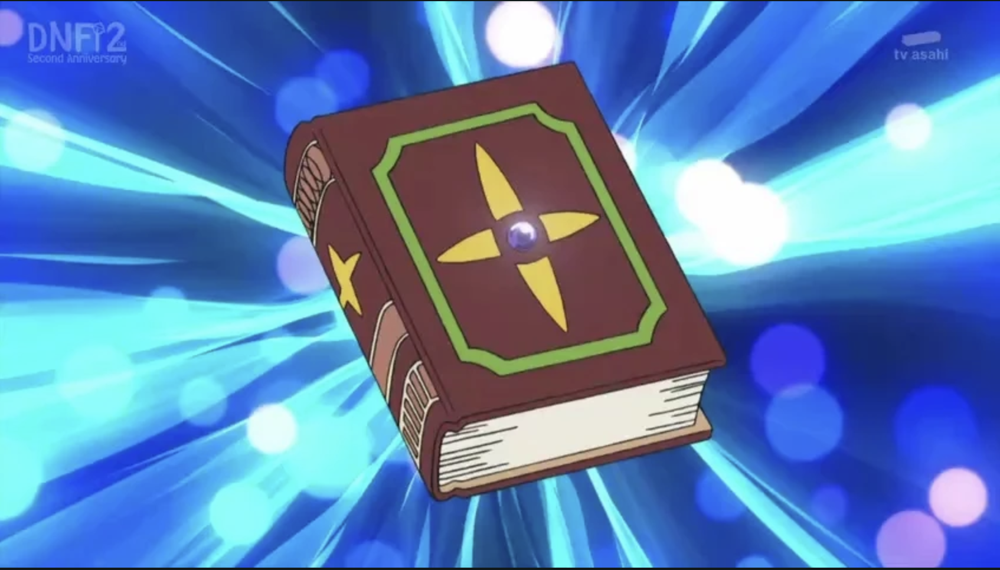

Doraemon is a robotic cat from the 22nd century, sent back in time to help a boy named Nobita Nobi. Sent by Nobita’s future grandson, Doraemon’s mission is to improve Nobita’s life so his descendants can live happily. With his special 4D pocket filled with futuristic gadgets like the Anywhere Door and Take-copter, Doraemon is no ordinary robot. Though made of metal, he shows kindness, fear, and joy — just like a human. He’s always ready to help Nobita through school troubles, bullies, and wild adventures.
Encyclopedia
click here
↓
